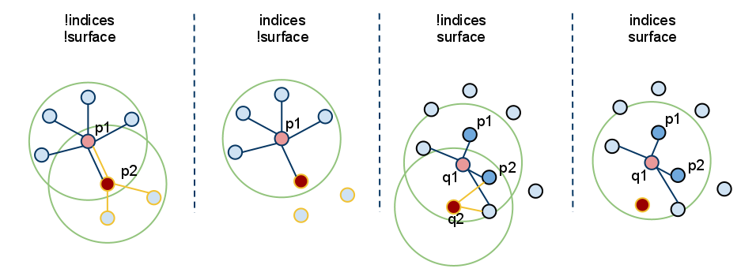

特征描述与提取Features *¶
3D 点云特征描述与提取是点云信息处理中的最基础也是最关键的部分，点云的识别、分割、重采样、配准、曲面重建等大部分算法，都十分依赖特征描述与提取的结果。
从尺度上来划分，一般分为局部特征描述和全局特征描述。例如局部的法线等几何形状特征的描述，全局的拓扑特征描述，都属于3D点云特征描述与提取范畴。在 PCL 中，目前已有很多基本的特征描述子与提取算法。
特征点¶
理想情况下，在使用同一种度量规则情况下，相同或相似的表面上的点的特征值应该非常相似，不同表面上的点的特征描述子有明显的差异。通过以下几个条件的变化仍能够获取获取相同或相似的局部表面特征，则说明该特征表示方式比较优秀：
- 刚性变换(rigid transformations)：即数据中的3D旋转和3D平移不应影响结果特征向量F的估计
- 多种采样密度(varying sampling density)：原则上，在一个局部表面或多或少采样密度的应具有相同的特征向量
- 噪声(noise)：在数据中存在轻微噪声的情况下，由特征点描述的特征向量必须相同或非常相近

通常，PCL功能使用近似的方法通过快速的kd-tree查询来计算查询点的最近邻居，我们感兴趣的查询有两种：
- k搜索：确定查询点的k个（用户给定参数）邻居
- 半径搜索：确定半径为r的球面内查询点的所有邻居。
如何传递输入参数¶
由于PCL中几乎所有类都继承自基本pcl::PCLBase类，因此pcl::Feature类以两种不同的方式接受输入数据：
- 通过
setInputCloud(PointCloudConstPtr&)给出的整个点云数据集， 任何试图在给定输入云中的每个点上进行特征估计。 - 通过
setInputCloud(PointCloudConstPtr&)和setIndices(IndicesConstPtr&)（可选）给出的点云数据集的子集， 所有特征估计方式都将用来尝试估计输入云中每个在indices索引列表中点的特征。默认情况下，如果未给出索引集，则将考虑云中的所有点。
另外，可以通过额外的调用setSearchSurface(PointCloudConstPtr&)来指定要搜索使用的点邻居集。此调用是可选的，如果未提供搜索范围的情况下，默认将使用输入点云数据集。 由于始终需要setInputCloud()，因此可以使用<setInputCloud()，setIndices()，setSearchSurface()>创建多达四个组合。假设我们有两个点云，P = \{p_1, p_2, …p_n\}和Q = \{q_1, q_2, …, q_n\}。下图显示了所有四种情况：

-
setIndices() = false, setSearchSurface() = false
毫无疑问，这是PCL中最常用的情况，用户仅输入单个PointCloud数据集，并期望在云中的所有点处估计某个特征。
由于我们不希望根据是否给出一组indices(索引)和/或search surface(搜索表面)来维护不同的实现副本，因此每当
indices = false时，PCL就会创建一组内部索引（作为std::vector <int>）基本上指向整个数据集（索引= 1..N，其中N是云中的点数）。在上图中，这对应于最左边的情况。首先，我们估计p_1的最近邻居，然后估计p_2的最近邻居，依此类推，直到用尽P中的所有点。
-
setIndices() = true, setSearchSurface() = false
如前所述，特征估计方法将仅计算在给定indices(索引) 的vecter中具有索引的那些点的特征；
在上图中，这对应于第二种情况。在此，我们假设p_2的索引不是给定索引vector的一部分，因此不会在p2处估计任何邻居或特征。
-
setIndices() = false, setSearchSurface() = true
与第一种情况一样，将对输入的所有点进行特征估计，但是
setSearchSurface()中给定的基础相邻表面将用于获取输入的最近邻居点，而不是输入云本身；在上图中，这对应于第三种情况。如果Q = \{q_1, q_2\}是作为输入云，把P设置为Q的search surface搜索面，则将从P计算q_1和q_2的邻居。
-
setIndices() = true, setSearchSurface() = true
这是最罕见的情况，同时给出了indices索引和search surface搜索表面。在这种情况下，将使用
setSearchSurface中提供的搜索表面信息来计算<input, indices>中的子集的特征。最后，在上图中，这对应于最右边的情况。在此，我们假设q_2的索引不属于为Q指定的索引向量，因此在q2处不会估计出任何邻居或特征。
使用setSearchSurface的最有用的情况是：当我们有一个非常密集的输入数据集，但我们不想估计其中所有点的特征，而是要估计使用pcl_keypoints中的方法发现的某些关键点，或者在点云的降采样版本上（例如，使用pcl::VoxelGrid <T>过滤器获得的降采样点云）。在这种情况下，我们通过setInputCloud传递降采样/关键点输入，并将原始数据作为setSearchSurface传递，这样可以大幅提高效率。
法向量估算示例¶
法向量估算实现(1)¶
查询点的相邻点可以用于估计局部特征表示，该局部特征表示捕获查询点周围的基础采样表面的几何形状。描述表面几何形状的一个重要问题是首先推断其在坐标系中的方向，即估算其法线。表面法线是表面的重要属性，在许多领域（例如计算机图形应用程序）中大量使用，以应用正确的光源来生成阴影和其他视觉效果（有关更多信息，请参见[RusuDissertation]）。 以下代码片段将为输入数据集中的所有点估计一组表面法线。
#include <pcl/point_types.h>
#include <pcl/features/normal_3d.h>
{
pcl::PointCloud<pcl::PointXYZ>::Ptr cloud (new pcl::PointCloud<pcl::PointXYZ>);
... read, pass in or create a point cloud ...
// 创建法向量估算类，传递输入数据集
pcl::NormalEstimation<pcl::PointXYZ, pcl::Normal> ne;
ne.setInputCloud (cloud);
// 创建一个空的kdtree，将值传递给法向量估算对象
// 这个tree对象将会在ne内部根据输入的数据集进行填充（这里设置没有其他的search surface）
pcl::search::KdTree<pcl::PointXYZ>::Ptr tree (new pcl::search::KdTree<pcl::PointXYZ> ());
ne.setSearchMethod (tree);
// 定义输出数据集
pcl::PointCloud<pcl::Normal>::Ptr cloud_normals (new pcl::PointCloud<pcl::Normal>);
// 使用一个半径为3cm的球体中的所有邻居点
ne.setRadiusSearch (0.03);
// 计算特征
ne.compute (*cloud_normals);
// cloud_normals->points.size () 输出特征的点个数应当定于输入的点个数 cloud->points.size ()
}
法向量估算实现(2)¶
以下代码片段将会从一个点云的子集中进行表面法线估算
#include <pcl/point_types.h>
#include <pcl/features/normal_3d.h>
{
pcl::PointCloud<pcl::PointXYZ>::Ptr cloud (new pcl::PointCloud<pcl::PointXYZ>);
... read, pass in or create a point cloud ...
// 准备一个indices索引集合，为了简单起见，我们直接使用点云的前10%的点
std::vector<int> indices (std::floor (cloud->points.size () / 10));
for (std::size_t i = 0; i < indices.size (); ++i) indices[i] = i;
// 创建法向量估算类，设置输入点云
pcl::NormalEstimation<pcl::PointXYZ, pcl::Normal> ne;
ne.setInputCloud (cloud);
// 设置indices索引
boost::shared_ptr<std::vector<int> > indicesptr (new std::vector<int> (indices));
ne.setIndices (indicesptr);
// 创建一个空的kdtree，将值传递给法向量估算对象
// 这个tree对象将会在ne内部根据输入的数据集进行填充（这里设置没有其他的search surface）
pcl::search::KdTree<pcl::PointXYZ>::Ptr tree (new pcl::search::KdTree<pcl::PointXYZ> ());
ne.setSearchMethod (tree);
// 定义输出数据集
pcl::PointCloud<pcl::Normal>::Ptr cloud_normals (new pcl::PointCloud<pcl::Normal>);
// 使用一个半径为3cm的球体中的所有邻居点
ne.setRadiusSearch (0.03);
// 计算特征
ne.compute (*cloud_normals);
// cloud_normals->points.size () 输出特征的点个数应当定于输入的点个数 cloud->points.size ()
}
法向量估算实现(3)¶
最后，以下代码片段将为输入数据集中的所有点估算一组表面法线，但将使用另一个数据集（原始点云）估计其最近的邻居。如前所述，一个很好的方式是降采样版本作为输入input cloud。
#include <pcl/point_types.h>
#include <pcl/features/normal_3d.h>
{
pcl::PointCloud<pcl::PointXYZ>::Ptr cloud (new pcl::PointCloud<pcl::PointXYZ>);
pcl::PointCloud<pcl::PointXYZ>::Ptr cloud_downsampled (new pcl::PointCloud<pcl::PointXYZ>);
... read, pass in or create a point cloud ...
... create a downsampled version of it ...
// 创建法向量估算类，将降采样后的数据作为输入点云
pcl::NormalEstimation<pcl::PointXYZ, pcl::Normal> ne;
ne.setInputCloud (cloud_downsampled);
// 传入降采样之前的原始数据作为search surface
ne.setSearchSurface (cloud);
// 创建一个空的kdtree，将值传递给法向量估算对象
// 这个tree对象将会在ne内部根据输入的数据集进行填充（这里设置没有其他的search surface）
pcl::search::KdTree<pcl::PointXYZ>::Ptr tree (new pcl::search::KdTree<pcl::PointXYZ> ());
ne.setSearchMethod (tree);
// 定义输出数据集
pcl::PointCloud<pcl::Normal>::Ptr cloud_normals (new pcl::PointCloud<pcl::Normal>);
// 使用一个半径为3cm的球体中的所有邻居点
ne.setRadiusSearch (0.03);
// 计算特征
ne.compute (*cloud_normals);
// cloud_normals->points.size()输出特征的点个数应当定于输入的点个数cloud->points.size()
}